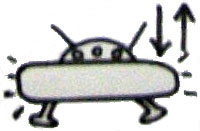

Un chimiste de Los Alamos annonce la découverte de 2 drogues
(chlorpromazine, acide citrique) dans la carcasse d'un taureau (6 mois) retrouvé mutilé dans le comté de Torrance (Nouveau-Mexique) plus tôt dans l'année Albuquerque
Tribune, 1979b < Rommel, K. M., Jr.: "1979
Incidents" in "A Popular History of Livestock Mutilations in New Mexico,
Winter 1975 - Spring 1979", Operation Animal Mutilation, Report of the district attorney, 1st judicial
district, état du Nouveau-Mexique, juin 1980.
A Sellières (Jura), 1 automobiliste aperçoit 1 boule
lumineuse rouge-orangée avec des "antennes en tire-bouchon" se déplacer puis disparaître rapidement vers le
sud-ouest L'analyse des gendarmes indique qu'il ne peut pas s'agir de la Lune compte tenu d'une vérification faite le lendemain à
la même heure et qui montre que la Lune se trouvait plus à
"gauche" du véhicule que l'observation faite par le témoin. En fait, l'analyse précise du ciel montre que ce jour-là
au moment de l'observation la Lune se trouvait bien dans l'axe de l'observation et a disparu à
l'heure de l'observation. Il est donc évident que le témoin est observé un coucher de Lune assez lumineux. La présence de nuages a probablement provoqué des reflets ou des rayonnements et la disparition rapide indiquée par le témoin s'explique facilement par le fait qu'elle roulait elle-même en voiture. La vérification faite le 9 mai à
la même heure n'est pas probante puisque la Lune est alors plus à
l'ouest et plus haut sur l'horizon ce qui permet de la reconnaître sans ambiguitéGEPAN: PAN
classé A.
Dessin de Marie-Paule (10 ans) Deforge,G.

Marie Paule P. (10 ans CM2). Descente jusqu'à 1 m du sol. Il allait se poser
puis est remonté tout de suite. Il a disparu dans les nuagesDeforge, G..
A Vienne (Isère), dans un dans le ciel dégagé et sans
vent, plusieurs personnes observent 1 phénomène ovale argenté se déplacer lentement en oscillant sur une trajectoire
nord-sud et perd progressivement de l'altitude. Semblant tomber derrière une colline, 1 des témoins part à sa
recherche et verra l'objet s'élever rapidement pour disparaître. Aucun bruit n'a été entendu par les témoins Selon le GEPAN, ces personnes ont probablement vu un ballonGEPAN: PAN
classé B.
Au Chatelard (Savoie), plusieurs personnes dans des
champs aperçoivent 1 phénomène au sol puis s'envolant lentement horizontalement. De forme sphérique et de couleur
métallique il se déplace en oscillant tout en suivant les formes du terrain et prend de la vitesse en se déplaçant
verticalement. Certains témoins pourront le voir durant 30 mn environ avant qu'il ne disparaisse progressivement
Selon le GEPAN, aucune information sur un éventuel lâché de ballon sonde dans le secteur n'a
été recueillie, mais d'après les descriptions données, ces personnes ont probablement vu un ballonGEPAN: PAN
classé B.
A Lyon (Rhônes), 2 fonctionnaires de police en service
aperçoivent dans le ciel à faible altitude 4 lumières ovales blanches-jaunes passant progressivement au-dessus d'eux
puis prenant une autre direction. Il leur est impossible de dire si les lumières appartiennent à un seul objet ou
constituent des phénomènes autonomes. Un léger ronflement est entendu avant que le phénomène ne disparaisse en
direction du sud-est caché par le paysage. Aucune interférence ne sera remarquée sur leur équipement de bord Selon le GEPAN, la description faite par les témoins et la proximité de plusieurs aérodromes (outre Lyon-Satolas) permet de penser avec une bonne probabilité que les 2 fonctionnaires de police ont été témoins d'un avion en phase d'approcheGEPAN: PAN
classé B.
Sur un cargo de la Marine Nationale française au nord du Chimborazo (volcan
d'Equateur, océan Pacifique), 2 témoins en quart sur le pont observent durant 2 à 3 mn
un groupe de 4 échos radar juxtaposés formant un gros écho
aux contours nets observé sur un radar V-22. La nature de l'écho ne correspond pas à un brouillage météo ni à une
réflexion multiple des coques GEPAN: PAN
classé C.
A Loivre (Marne), 1 automobiliste circulant sur une
petite route de campagne est surpris de voir un phénomène en forme de croissant de lune orange vif venant dans sa
direction. Ce phénomène à faible altitude semble suivre l'automobiliste tout au long de son déplacement vers le
nord-ouest. Aucun bruit n'est entendu. Le phénomène sera perdu de vue. Le lendemain le témoin retournera au même
endroit et constatera la présence du même objet, mais de couleur blanche. Celui-ci disparaitra derrière les bois en
direction du nord-ouest Selon le GEPAN, la carte du ciel ce soir-là nous indique la présence à
basse altitude et au nord-ouest de la Lune avec une magnitude de -8,91 : cette personne a fait une observation astronomique de la Lune. L'impression de mouvement de celle-ci quand on se déplace est bien connuGEPAN: PAN
classé A.
A Avize (Marne), 2 personnes observent dans le ciel durant 20
mn 1 phénomène en forme de ballon de rugby applati, traversant le ciel sans le sens Sud-est-Nord-ouest. Les témoins
remarquent une traînée orange vif plus ou moins longue à la suite de l'objet estimée être à 500 m environ
d'altitude. 1 des 2 témoins, élève pilote, ne reconnaît pas là un aéronef GEPAN: PAN
classé C.
A Gentilly (Val-de-Marne), 2 personnes observent au plein
ouest dans le ciel durant plusieurs mn, un phénomène lumineux volumineux en forme de croissant et de couleur
orangée. Un autre phénomène est également apparu quelques instants Selon le GEPAN, la carte du
ciel ce matin-là indique plein ouest la présence de Jupiter (magnitude -1,49), Pollux (magnitude 0,98) et un
coucher de la Lune (magnitude-9,51). Ces personnes ont fait une observation astronomique de cet ensembleGEPAN: PAN
classé A.
Aux environs de Los Molinos (à 100 km au sud de Cordoba) un photographe amateur est
soudain été gêné par l'ombre que créait dans le viseur 1 objet volant ressemblant par sa forme à un sombrero avec 2
hublots. Il en prend plusieurs clichés nets déclarés authentiques "Les photos de
l'ovni étaient authentiques", La Presse de Montréal (Québec), samedi 26 mai 1979, p. E4.
Victor Marchetti écrit un article dans le trimestriel américain Second
Look, où il indique que les ovnis n'étaient pas un sujet de conversation courant à l'époque où il était membre
de la CIA. Chacun savait que ce genre d'information était considéré comme extrêmement
sensible. Aux plus hauts niveaux de la hiérarchie, il avait parfois entendu des allusions discrètes concernant
des récupérations de disques accidentés et des corps de petits hommes.